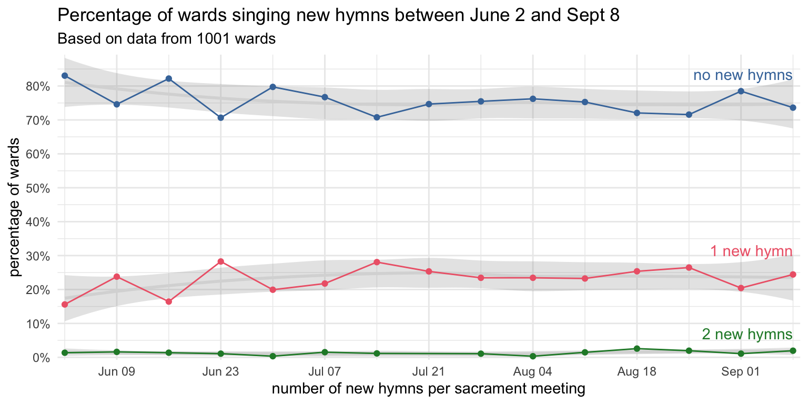

| Number of wards I have data from, by week | |
| Since June 2 | |
| date | wards |
|---|---|
| June 02 | 115 |
| June 09 | 91 |
| June 16 | 104 |
| June 23 | 123 |
| June 30 | 111 |
| July 07 | 99 |
| July 14 | 120 |
The First Batch of New Hymns!
general
frequency
new hymns
On May 30th, the church released the first batch of new hymns. I have done posts on how those hymns have been used during the first, second, and third weeks since their release. Moving forward, I’ll update this blog post with new data as it comes in so that you can get a better look at how hymns are being adopted over several weeks at once. I’ll try to update this page weekly until the second batch of hymns comes out in September. Currently I have data from 763 sacrament meetings since June 2nd from 223 wards.
Note
Note that this blog post change slightly as more data comes in, even from earlier weeks since the release. However, I feel like enough data has been collected that the overall patterns are mostly pretty clear.
But first, here’s how much data I have for each week, just so you have an idea of what I’m working with.
How many wards are singing new hymns each week?
The following plot shows the number of new hymns sung per ward each week since the release of the new hymns.

There are far more zeros than I expected. Unsurprisingly, the first week is when the most number of wards sang new hymns, but even then it was only about a third of wards. Since then, between a third and a quarter of wards have sung new hymns on a given Sunday.
However, a lot of my data comes from single-week contributions from various wards, so just just because a ward didn’t sing a new hymn this week doesn’t mean they haven’t done any yet. To see what proportion of wards have introduced new hymns up to this point, I took a look at the 21 wards that I have data from from every week since the first batch of hymns came out. About 35% of them haven’t sung new hymns at all yet. About a third of them have sung three new hymns. The most was one ward that has sung a new hymn six out of seven weeks so far.
What hymns are most popular?
It should come as no surprise that the most popular hymn in this new batch is
The following table shows the new hymns in order of how often they’ve been sung. The percent column shows what percentage of sacrament meetings since these hymns have been released each hymn has been sung in as congregational hymns.
| Percentage of meetings hymns have been sung in | |
| Since June 2 | |
| hymn | percent |
|---|---|
| Come, Thou Fount of Every Blessing (1001) | 9.96% |
| It Is Well with My Soul (1003) | 5.24% |
| As Bread is Broken (1007) | 4.59% |
| I Will Walk with Jesus (1004) | 3.28% |
| Bread of Life, Living Water (1008) | 3.01% |
| His Eye Is on the Sparrow (1005) | 2.36% |
| Gethsemane (1009) | 1.97% |
| When the Savior Comes Again (1002) | 1.05% |
| Think a Sacred Song (1006) | 0.92% |
Those numbers may seem low, but keep in mind that wards are unlikely to repeat these hymns too often. So, at best, hymns can only be a small percentage of the total number of sacrament meetings since their release. The fact that
What hymns are most popular each week?
Now that we’re several weeks past the release of this first batch of hymns, we can start to see a glimpse of how the adoption of these new hymns has ebbed and flowed and how each hymn has been introduced. The figure below shows what proportion of wards sang what hymns each week, given that they sang a new hymn that week. So, we’re only focused on wards that have used these hymns.

There are two other major trends so far.
When during meetings are these hymns sung?
We can see when these hymns tend to be sung and get an overall look at the popularity of the first batch of hymns. We’re already starting to see that each hymn has its own story.
| When are new hymns sung in sacrament meeting? | ||||
| Since June 2 | ||||
| New Hymn | Opening | Sacrament | Intermediate | Closing |
|---|---|---|---|---|
| Come, Thou Fount of Every Blessing (1001) | 28 | 0 | 13 | 35 |
| When the Savior Comes Again (1002) | 1 | 1 | 5 | 1 |
| It Is Well with My Soul (1003) | 8 | 0 | 8 | 24 |
| I Will Walk with Jesus (1004) | 9 | 0 | 7 | 9 |
| His Eye Is on the Sparrow (1005) | 4 | 1 | 4 | 9 |
| Think a Sacred Song (1006) | 3 | 0 | 2 | 2 |
| As Bread is Broken (1007) | 0 | 35 | 0 | 0 |
| Bread of Life, Living Water (1008) | 0 | 22 | 0 | 1 |
| Gethsemane (1009) | 1 | 6 | 3 | 5 |
Conclusion
This first batch of hymns only came out recently, but we’re starting to see some trends already. Again, this is only based on 763 sacrament meetings from 223 wards. It’s not an insignificant amount of data, but it is just a sliver of the many wards across the country and the world. As always, I’m collecting more data and if you’d like to contribute your ward’s data, you can do so here.